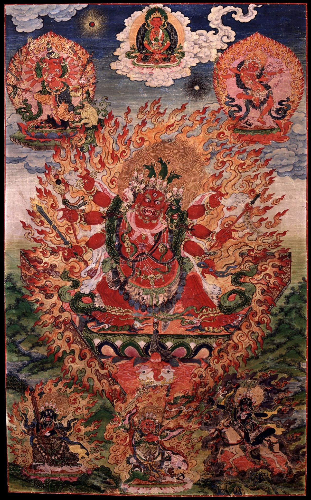

哈雅格利瓦（馬頭明王）密修成就法
《最勝駿馬戲現之意飾》
前言與題解
俄譯繁中
迎接即將到來的馬年——對我們密乘行者而言，這就是哈雅格利瓦（馬頭明王）的一年（笑）。
哈雅格利瓦「密修（Guhyasādhana）」成就法：《最勝駿馬嬉遊示現之意飾》（意嚴）。
#KönchokJigmeWangpo（貢卻吉美旺波）
༄༅ །།རྟ་མགྲིན་གསང་སྒྲུབ་ཀྱི་སྒྲུབ་ཐབས་རྟ་མཆོག་རོལ་པའི་དགོངས་རྒྱན་ཞེས་བྱ་བ་བཞུགས་སོ།།
藏轉繁中
《馬頭（哈雅格利瓦）密修之成就法——名為〈最勝駿馬嬉遊之意嚴〉》在此。
俄譯繁中
作者：貢卻・吉美旺波・耶謝尊都・札巴爹（Könchok Jigme Wangpo Yeshe Tsöndru Drakpa De）。
關於作者與圖像
俄譯繁中
圖中所示：
中央主尊——哈雅格利瓦密修成就法（rta mgrin gsang sgrub）。
下方由左至右：貝策（Begtse）、佩哈爾・嘉津（Pehar Gyajin）、金剛善護・噶爾瓦黑（Dorje Legpa Garwa Nagpo）。

傳承背景與來源
俄譯繁中
這部《哈雅格利瓦密修成就法——〈最勝駿馬嬉遊示現之意飾〉》，由「遍知蔣揚謝巴」的第二世轉世者——貢卻・吉美旺波・耶謝尊都・札巴爹（1728–1791）所撰。此法收錄於他在札什吉爾（Tashi Khyil）寺刊行的十二函全集之第九卷，所屬文本為《本尊修法集——「一切所需之源」》（藏：yi dam sgrub skor dgos ‘dod kun ‘byung）。
在《密修哈雅格利瓦後續許可（隨許）授與儀軌》中，第二世達賴喇嘛寫道：一切完全覺悟的佛陀所宣說之教法，皆含攝於九乘之中。其中，本法屬於大瑜伽（Mahayoga）生起次第的教法傳承。於大瑜伽八大修持分支中，本法屬於「蓮花語」之教法支系。此支系中包含多種教法，例如：《最勝駿馬的嬉遊示現》（rta mchog rol pa）、《大蓮花自在主》（pad ma dbang chen）、《如來聚集》（bde gshegs ‘dus pa）、《秘密聚集》（gsang ba ‘dus pa）、《甘露乘》（bdud rtsi theg pa）以及許多其他教法。
其中，本法屬於「最勝駿馬嬉遊示現」之系統。在「外成就（phyi sgrub）、內成就（nang sgrub）、密成就（gsang sgrub）」三類中，本法為具大加持、深奧的密成就。此教法之源頭，承自大成就者翁敦・揭爾剛巴・確吉僧格（dbon ston skyer sgang chos kyi seng ge），他是香巴噶舉傳承中被稱為「七珍寶」的七位傳承持有者之第五位。
2005年8月，蒙古佛教領袖第九世哲布尊丹巴呼圖克圖（Bogdo-Gegen Jebtsundamba Khutughtu IX）依達賴喇嘛之指示，在卡爾梅克（Kalmykia）賜予哈雅格利瓦密修灌頂。此譯文獻給所有曾參與該灌頂者，以及一切希求修持此深法之人。
【正行：頂禮與皈依發心】
༄༅༅། །ན་མོ་གུ་རུ། །
藏轉繁中 頂禮上師（NAMO GURU）。
頂禮偈
མཐུ་སྟོབས་རྩེ་བརྒྱ་གདེངས་ཙམ་གྱིས། །
གནོད་བྱེད་ལྷ་མིན་ལུས་ཕྲའི་མངལ། །
འཇོམས་མཛད་ཧ་ཡ་གྲཱི་ཝ་ལ། །
གུས་བཏུད་སྒྲུབ་ཐབས་མདོ་ཙམ་སྤེལ། །
俄譯繁中
向哈雅格利瓦頂禮：祂僅以力與威德之金剛杵（具百尖端）一揮，便摧毀作害阿修羅等「細身美女」之胎藏（喻作害之根源）；我將撰寫（此尊的）簡略成就法。
藏轉繁中
僅以百尖金剛之力一震，便能摧伏一切作害阿修羅等之微細根源；我向能摧滅一切的哈雅格利瓦（馬頭明王）恭敬頂禮，並於此宣說其簡略成就法。
修法動機
གྲུབ་ཆེན་སྐྱེར་སྒང་པའི་ལུགས་ཀྱི་རྟ་མགྲིན་གསང་སྒྲུབ་སྒོམ་པར་འདོད་པས། སྐྱབས་སེམས་སྔོན་དུ་བཏང་ནས།
俄譯繁中
因你欲修持大成就者揭爾剛巴（Kyer-gang-pa）傳統之哈雅格利瓦密修禪修，首先應皈依並發起菩提心。
藏轉繁中
若欲依大成就者揭爾剛巴之傳承修持「馬頭密修成就法」之禪修，當先行皈依並發菩提心。
皈依文
བདག་དང་འགྲོ་བ་ཁམས་གསུམ་ནམ་མཁའི་མཐའ་དང་མཉམ་པའི་སེམས་ཅན་ཐམས་ཅད་དུས་འདི་ནས་བཟུང་སྟེ་
ཇི་སྲིད་བྱང་ཆུབ་སྙིང་པོ་ལ་མཆིས་ཀྱི་བར་དུ་
ཕྱོགས་བཅུ་དུས་གསུམ་གྱི་དེ་བཞིན་གཤེགས་པ་ཐམས་ཅད་ཀྱི་སྐུ་གསུང་ཐུགས་ཡོན་ཏན་ཕྲིན་ལས་ཐམས་ཅད་ཀྱི་ངོ་བོ།
ཆོས་ཀྱི་ཕུང་པོ་སྟོང་ཕྲག་བརྒྱད་ཅུ་རྩ་བཞིའི་འབྱུང་གནས།
འཕགས་པའི་དགེ་འདུན་ཐམས་ཅད་ཀྱི་མངའ་བདག
དྲིན་ཅན་རྩ་བ་དང་བརྒྱུད་པར་བཅས་པའི་དཔལ་ལྡན་བླ་མ་དམ་པ་རྣམས་ལ་སྐྱབས་སུ་མཆིའོ། །
俄譯繁中
我與一切眾生，其數量等同三界虛空之邊際，從此刻起直到證得菩提精髓之前：
皈依十方三世一切如來之身、語、意、功德與事業的一切本質；
皈依八萬四千法門之源；
皈依一切聖者僧團之主；
皈依具恩之根本上師與傳承中一切具德聖師！
藏轉繁中
我與一切眾生（其數等同三界虛空邊際），從此刻起直至證得菩提心髓（究竟覺醒）之前；皈依十方三世一切如來之身、語、意、功德與事業的一切本質；皈依八萬四千法藏之源（正法）；皈依一切聖眾僧伽之主；皈依具恩之根本上師，以及一切殊勝傳承上師。
三寶皈依
རྫོགས་པའི་སངས་རྒྱས་བཅོམ་ལྡན་འདས་རྣམས་ལ་སྐྱབས་སུ་མཆིའོ། །
དམ་པའི་ཆོས་རྣམས་ལ་སྐྱབས་སུ་མཆིའོ། །
འཕགས་པའི་དགེ་འདུན་རྣམས་ལ་སྐྱབས་སུ་མཆིའོ། །
俄譯繁中
我皈依圓滿正覺之佛世尊；我皈依一切殊勝正法；我皈依聖者僧伽！（三遍）
藏轉繁中
皈依圓滿正覺世尊佛；皈依殊勝正法；皈依聖眾僧伽。（三遍）
祈請加持
བླ་མ་དང་དཀོན་མཆོག་རིན་པོ་ཆེ་རྣམ་པ་གསུམ་ལ་བདག་ཕྱག་འཚལ་ཞིང་སྐྱབས་སུ་མཆིའོ། །
ཁྱེད་རྣམས་ཀྱིས་བདག་གི་རྒྱུད་བྱིན་གྱིས་བརླབ་ཏུ་གསོལ།
俄譯繁中
我向珍貴的上師與三寶頂禮並皈依；祈請你們加持我的心續（相續）！（一遍）
藏轉繁中
我向上師與三寶恭敬頂禮並作皈依；祈請諸尊加持、攝受我之相續。
發菩提心
སེམས་ཅན་ཐམས་ཅད་ཀྱི་དོན་དུ་རྫོགས་པའི་སངས་རྒྱས་ཀྱི་གོ་འཕང་ཐོབ་པར་བྱ།
དེའི་ཕྱིར་དུ་ཁྲོ་བོའི་རྒྱལ་པོ་རྟ་མཆོག་རོལ་པའི་བསྒོམ་བཟླས་ཉམས་སུ་བླང་བར་བགྱིའོ། །
俄譯繁中
為利一切眾生，我將獲得圓滿正覺佛果！為此，我將修持「忿怒王——最勝駿馬嬉遊示現」之禪修與持誦！（三遍）
藏轉繁中
為利一切眾生，我誓願證得圓滿佛果；因此，我將修持「忿怒王——最勝駿馬嬉遊示現」之觀修與持誦。
四無量心
སེམས་ཅན་ཐམས་ཅད་བདེ་བ་དང་བདེ་བའི་རྒྱུ་དང་ལྡན་པར་གྱུར་ཅིག
སྡུག་བསྔལ་དང་སྡུག་བསྔལ་གྱི་རྒྱུ་དང་བྲལ་བར་གྱུར་ཅིག
སྡུག་བསྔལ་མེད་པའི་བདེ་བ་དང་མི་འབྲལ་བར་གྱུར་ཅིག
ཉེ་རིང་ཆགས་སྡང་དང་བྲལ་བའི་བཏང་སྙོམས་ལ་གནས་པར་གྱུར་ཅིག
俄譯繁中
願一切眾生具足安樂及安樂之因！願遠離痛苦及痛苦之因！願不離無苦之樂！願住於遠離親疏貪瞋之平等捨中！
藏轉繁中
願一切眾生具足安樂及安樂之因；願遠離痛苦及痛苦之因；願不離無苦之樂；願住於離親疏貪瞋的平等捨。
【觀想生起】
入空性
ཨོྂ་སྭ་བྷཱ་ཝ་ཤུདྡྷཿ སརྦ་དྷརྨཿ སྭ་བྷཱ་ཝ་ཤུདྡྷོ྅ཧཾ།
oṃ svabhāvaśuddhaḥ sarvadharmāḥ svabhāvaśuddho 'ham
一切法自性清淨，我亦自性清淨。
སྟོང་པ་ཉིད་དུ་གྱུར།
俄譯繁中 一切化為空性。
藏轉繁中 一切融入空性。
生起種子字與本尊
སྟོང་པའི་ངང་ལས་སྣ་ཚོགས་པདྨའི་ལྟེ་བར་ཉི་མའི་གདན་ལ་
ཀླུ་ཆེན་པོ་བརྒྱད་བསྣོལ་བའི་སྟེང་དུ་ཧྲཱིཿལས་པདྨ་ཧྲཱིཿས་མཚན་པ་ཡོངས་སུ་གྱུར་པ་ལས་
俄譯繁中
由空性中生起多彩蓮花，其中央為日輪座；其上有八大龍（那伽）交纏，其上現「HRI（ཧྲཱིཿ）」字；由此現出標有「HRI」字的蓮花。由「HRI」字轉變——
藏轉繁中
於空性境中，現起具多彩花瓣之蓮花；於其中央日輪座上，有八大那伽交纏；其上現「HRI」字；由此化現一朵以「HRI」為印記之蓮花。由「HRI」轉化——
རང་ཉིད་ཁྲོ་བོའི་རྒྱལ་པོ་དཔལ་རྟ་མཆོག་རོལ་པ་སྐུ་མདོག་དམར་པོ། །
俄譯繁中 由此我顯現為「忿怒諸王之王——吉祥最勝駿馬嬉遊示現（哈雅格利瓦）」，身紅色。
藏轉繁中 我自身化為「忿怒王——吉祥最勝駿馬嬉遊示現」；身色紅。
詳觀本尊身相
ཞལ་གསུམ་ཕྱག་དྲུག་པ། རྩ་ཞལ་དམར་པོ། གཡས་ཞལ་ལྗང་ཀུ། གཡོན་ཞལ་དཀར་པོ།
ཞལ་རེ་རེ་ལ་སྤྱན་གསུམ་གསུམ་དང་ལྡན་ཞིང་སྡང་མིག་ཏུ་གཡོ་བ།
ཞལ་གདངས་ཤིང་མཆེ་བ་གཙིགས་པ། སྨིན་མ་དང་སྨ་ར་དམར་སེར་མེ་ལྟར་འབར་བ།
俄譯繁中
三面六臂。中央面紅、右面綠、左面白。
每一面各具三目，怒視炯然。
巨口大張，獠牙外露。紅黃眉鬚如火熾燃。
藏轉繁中
三面六臂：中央面紅，右面綠，左面白。每一面各具三目，怒視炯然。張口露齒、獠牙森然；眉與鬚呈紅黃之色，如火焰熾燃。
དབུ་སྐྲ་ཁམས་སེར་གྱེན་དུ་བརྫེས་པ། དབུ་གསུམ་གྱི་སྟེང་ན་རྟ་མགོ་ལྗང་ཀུ་གསུམ་ཁ་གདངས་ཤིང་
རྟ་སྐད་འཚེར་བ། རྔོག་མའི་གསེབ་ནས་མེ་སྟག་འཕྲོས་པས་སྟོང་གསུམ་མེའི་རྭ་གུར་གྱིས་འགེངས་པ།
俄譯繁中
褐色頭髮竪立。三首之上又有三個綠色馬首，張口發出馬嘶聲。
自鬃毛間迸射火星，令三千大千世界充滿火焰穹帳。
藏轉繁中
髮呈褐黃竪立衝天；三面之上各有三顆綠色馬首，張口怒現，嘶鳴如馬；自鬃間迸射火星，令三千大千世界充滿火焰天幕。
手幟與莊嚴
ཕྱག་དང་པོ་གཉིས་ཀྱིས་རྡོ་རྗེ་དང་སྡིགས་མཛུབ། བར་བ་གཉིས་ཀྱིས་ཁ་ཊྭཱཾ་ག་དང་མདུང་ཐུང་།
ཐ་མ་གཉིས་ཀྱིས་རལ་གྲི་དང་རྒྱུ་ཞགས་འཛིན་པ།
俄譯繁中
最初兩手：右手持金剛杵，左手作威嚇印。中間兩手：持卡杖（khaṭvāṅga）與短矛。
最後兩手：持劍與腸索。
藏轉繁中
最前兩臂：一手持金剛杵，一手作威嚇印；中間兩臂：持卡杖與短矛；最後兩臂：持利劍與腸索套繩。
མི་མགོ་སྐམ་པོ་ལྔས་དབུ་ལ་རྒྱན་ཅིང་།
རློན་པ་ལྔ་བཅུས་དོ་ཤལ་བྱས་པ། གླང་ཆེན་གྱི་ཀོ་རློན་དང་ཞིང་ཆེན་གྱི་གཡང་གཞིས་སྟོད་གཡོགས་པ།
སྟག་གི་ལྤགས་པའི་ཤམ་ཐབས་ཅན། ཁྲག་གི་ཐིག་ལེ། ཞག་གི་ཟོ་རིས། ཐལ་ཆེན་གྱི་ཚོམ་བུས་བྱུགས་པ།
མི་སྐྲའི་ཚངས་སྐུད་དང་། རུས་པའི་རྒྱན་དྲུག་གིས་བརྒྱན་པ།
俄譯繁中
頭戴五乾人頭冠。以五十鮮人頭作項鍊。上身披新剝象皮及敵人（教敵）人皮。
下著虎皮裙。兩頰點血斑。喉間有人脂紋。額上塗骨灰點。
肩披人髮梵線。身飾六種骨飾。
藏轉繁中
頭戴五顆乾枯人首冠作莊嚴；以五十顆鮮人首作項鍊；上身披新剝象皮及「教敵」人皮；下著虎皮裙；面頰點以血滴；喉間畫有人脂之紋；額上塗以火葬灰點；肩繫人髮梵線；佩戴六種骨飾。
姿態與威光
ཞབས་གཡས་བཞི་བསྐུམ་ཞིང་
གཡོན་བཞི་བརྐྱང་བས། ཀླུ་བརྒྱད་ཀྱི་ངོ་བོ་སྦྲུལ་བརྒྱད་བརྫིས་ཏེ་ཡེ་ཤེས་ཀྱི་མེ་དཔུང་རབ་ཏུ་འབར་བའི་
ཀློང་དཀྱིལ་ན་བཞུགས་པ།
俄譯繁中
右四足屈；左四足伸。足下踏八蛇（本性為八大龍），安住於熾盛燃燒的智慧火聚之中。
藏轉繁中
右側四足屈起；左側四足伸展；足下踏伏八蛇（本性為八大那伽），安住於熾盛燃燒的智慧火聚之境界中央。
མགུར་གྱི་བུམ་པ་ནས་ཞབས་ཀྱི་ལོང་བུ་ཡན་ཆད་སྤྲུལ་པའི་ཁྲོ་ཆུང་
དཔག་ཏུ་མེད་པས་ཁྲབ་ཀྱི་བྱང་བུ་ལྟར་གཏམས་པ།
俄譯繁中
從喉（瓶）至踝，如鎖子甲般，覆滿無量無數的小忿怒哈雅格利瓦化身。
藏轉繁中
自喉至踝，如甲冑般遍滿無量化現之小忿怒尊，密密如甲葉般覆身。
放光除障
རང་དང་ཁྲོ་ཆུང་ཐམས་ཅད་ཀྱི་ཞལ་ནས་
སྔགས་ཀྱི་སྒྲ་འབྲུག་སྟོང་ལྟར་སྒྲོགས་ཤིང་སྙིང་ཀར་ཉི་གདན་ལ་གནས་པའི་སྔགས་ཀྱི་མེ་ལྕེ་དང་
བ་སྤུའི་ཉག་མ་རེ་རེའི་གསེབ་ནས་སྤྲུལ་པའི་རྟ་མགྲིན་རང་འདྲ་དཔག་ཏུ་མེད་པ་སྤྲོས་པས་
俄譯繁中
自我與一切小忿怒尊之口中，咒音如千雷轟鳴。心間日輪座上有咒語之火焰舌。
且由每一毛孔中，化現無量與我相同的哈雅格利瓦向外發射。
藏轉繁中
我與一切小忿怒尊之口中，真言之聲如千雷齊鳴；心間日輪座上，有真言火焰之舌，並由每一毛孔之間，無量化現與我同相的馬頭明王遍滿而出。
སྟེང་འོག་བར་གསུམ་གྱི་གདོན་བགེགས་ལོག་འདྲེན་སྤྱི་དང་། ཁྱད་པར་རྒྱལ་འགོང་དམ་སྲི་སོགས་
གནོད་བྱེད་སྡེ་བརྒྱད་འབྱུང་པོ་ཕ་རོལ་གྱི་བྱད་མ་རྦད་འདྲེ་རྦོད་གཏོང་དང་བཅས་པ་ཐམས་ཅད་གཞོབ་ཐུལ་བསྲེག་ཅིང་བརླག་བར་གྱུར་པར་བསམ་ལ།
俄譯繁中
彼等將完全焚毀並消滅上、下、中三處的魔障與邪導引者，尤其是Gyalpo、Gongpo、Damsi等；
以及作害之八部眾、Bhuta、對他人施黑法、邪術及遣鬼魅作祟者，悉皆摧伏、焚燒、毀滅——應如是觀想。
藏轉繁中
普遍焚除上、下、中央三處之損害、障礙、引人入歧之邪導，尤其是「rgyal」、「gong」、「dam sri」等類；以及作害之八部眾、諸「bhūta」等；並一切對他人施作黑法、邪術、差遣惡靈等諸障難，悉皆摧折、調伏、焚燒、令其滅盡——如是作觀。
【持咒與事業】
根本咒
ཨོྃ་ཧྲཱིཿ པདྨཱནྟ་ཀྲྀཏ་བཛྲ་ཀྲོདྷ་ཧ་ཡ་གྲཱི་བ་ཧུ་ལུ་ཧུ་ལུ་ཧཱུྃ་ཕཊ།
oṃ hrīḥ padmāntakṛt vajrakrodha hayagrīva hulu hulu hūṃ phaṭ
嗡！赫利！蓮華摧滅者、金剛忿怒、馬頭明王：摧！摧！吽！啪！
ཅེས་ཅི་ནུས་བཟླ་གཤམ་དུ།
俄譯繁中 盡力持誦（能誦多少誦多少）。然後：
藏轉繁中 如是盡力持誦；然後（如下）。
事業咒一（攝受八部）
ཨོྃ་ཧྲཱིཿ པདྨཱནྟ་ཀྲྀཏ་བཛྲ་ཀྲོདྷ་ཧ་ཡ་གྲཱི་བ་ཧུ་ལུ་ཧུ་ལུ་ཧཱུྃ་ཕཊ། ཨོྃ་བཛྲ་དུན་བྷྱོ། ཏྲིག་ནན་ཛཿ ཛཿ ས་མ་ཡ་སྟྭཾ།
oṃ hrīḥ padmāntakṛt vajrakrodha hayagrīva hulu hulu hūṃ phaṭ | oṃ vajra dunbhyo | trig nan jaḥ jaḥ | samaya stvam
於根本咒後加誦：以金剛力召攝、攝伏，令其入誓言（受制、守誓）。
ཅེས་པ་སྡེ་བརྒྱད་དབང་སྡུད་དམེ་གཤེད་འབེབས་ཀྱི་སྔགས་དང་།
俄譯繁中 此為「制伏八部」以及「降下（斬殺親族兇徒之）行刑者」的咒。
藏轉繁中 此為「制伏／攝受八部眾」以及「降下（忿怒）行刑者」之真言。
事業咒二（Samaya指令）
ཨོྃ་ཧྲཱིཿ པདྨཱནྟ་ཀྲྀཏ་བཛྲ་ཀྲོདྷ་ཧ་ཡ་གྲཱི་བ་ཧུ་ལུ་ཧུ་ལུ་ཧཱུྃ་ཕཊ། ས་མ་ཡ་ཛཿ ས་མ་ཡ་བཟློག །ས་མ་ཡ་བྷྱོ། ས་མ་ཡ་གཏུབས། ས་མ་ཡ་བྱེར། ས་མ་ཡ་རྦད། ས་མ་ཡ་རྦད་རྦུད་ཕཊ་ཡ་འབྱུང་པོ་མཱ་ར་ཡ་ཛཿ ཛཿ
oṃ hrīḥ padmāntakṛt vajrakrodha hayagrīva hulu hulu hūṃ phaṭ | samaya jaḥ | samaya dok | samaya bhyo | samaya tubs | samaya jer | samaya bad | samaya bad bud phaṭ | ya 'byung po māraya jaḥ jaḥ
以誓言力作忿怒事業之「召、遮、遣、斬、破、摧、滅」等指令串，並令諸障礙眾「māraya」（誅滅／斷除）而失勢。
ཅེས་པའི་ལས་སྔགས་རྣམས་སྦྲེལ་ནས་ཉེར་གཅིག་རེ་བཟླ།
俄譯繁中 將這些事業咒串連後，每一條各誦二十一遍。
藏轉繁中 將以上事業真言串聯後，各自持誦二十一遍。
更廣版本（可選）
སྤྲོ་ན་ཐམས་ཅད་མཁྱེན་པ་དབྱངས་ཅན་བཞད་པའི་སྒྲུབ་ཐབས་ལས་འབྱུང་བའི་སྔགས།
俄譯繁中 若你希望修持更廣的版本，則誦出自遍知揚千謝巴（Yangchen Shepa）之哈雅格利瓦成就法中的咒：
藏轉繁中 若欲作更廣之修法，可持誦出自「一切知楊欽謝巴」成就法中的真言（如下）：
ཨོྃ་ཧྲཱིཿ པདྨཱནྟ་ཀྲྀཏ་བཛྲ་ཀྲོདྷ་ཧ་ཡ་གྲཱི་བ་ཧུ་ལུ་ཧུ་ལུ་ཧཱུྃ་ཕཊ། ཨོྃ་ཧཾ་ཤ་ཏྲིག་ཏྲིག་ནན། ཏྲིག་ཧུར་ཐུམ་ཛཿ མ་ར་ཡ་ཕཊ། ཨོྃ་རུ་ཏྲིག་ཏྲིག་རུ་ཏྲིག་ཏྲིག་ནན། ཏྲིག་ཧུར་ཐུམ་ཛཿ མཱ་ར་ཡ་ཕཊ།
oṃ hrīḥ padmāntakṛt vajrakrodha hayagrīva hulu hulu hūṃ phaṭ | oṃ haṃ śa trig trig nan | trig hur thum jaḥ | māraya phaṭ | oṃ ru trig trig ru trig trig nan | trig hur thum jaḥ | māraya phaṭ
更強力的忿怒事業音節串：召攝、摧破、斬斷、誅滅障難（依傳承口訣按音誦持）。
ཅེས་པ་ཅི་འགྲུབ་རེ་བཟླས་པའི་མཐར།
俄譯繁中 能誦多少就誦多少；然後（如下）：
藏轉繁中 如是隨力持誦後，接著（以下進入回向、供養等次第）。
【回向】
དགེ་བ་འདི་ཡིས་མྱུར་ཏུ་བདག །
རྟ་མཆོག་རོལ་པ་འགྲུབ་གྱུར་ནས། །
འགྲོ་བ་གཅིག་ཀྱང་མ་ལུས་པ། །
དེ་ཡི་ས་ལ་འགོད་པར་ཤོག། །།
俄譯繁中
願以此善根，我迅速成就「最勝駿馬嬉遊示現（哈雅格利瓦）」之果位；
並令一切眾生無一遺漏，皆安置於彼境界（彼地位）中。
藏轉繁中
願以此善根，我能迅速成就「最勝駿馬嬉遊示現」之果位；使一切眾生無有遺漏，皆安立於彼之境界（同證其地）。
【朵瑪供養】
གཏོར་མ་འབུལ་འདོད་ན།
俄譯繁中 若欲作朵瑪供養：
藏轉繁中 若欲獻供朵瑪：
1. 淨除障礙
ཨོྃ་ཨ་མྲྀ་ཏ་ཀུཎྜལི་ཧཱུྃ་ཕཊ།
oṃ amṛta kuṇḍali hūṃ phaṭ
以甘露軍荼利之力淨除障礙、遣除違緣（使供養無礙）。
俄譯繁中
以此遣除作障之靈（障礙眾）。
2. 轉化供品
ཨོྂ་སྭ་བྷཱ་ཝ་ཤུདྡྷཿ སརྦ་དྷརྨཿ སྭ་བྷཱ་ཝ་ཤུདྡྷོ྅ཧཾ།
oṃ svabhāvaśuddhaḥ sarvadharmāḥ svabhāvaśuddho 'ham
一切法自性本淨，我亦自性本淨（入空、淨化、轉化供品）。
སྟོང་པ་ཉིད་དུ་གྱུར། སྟོང་པའི་ངང་ལས་གཏོར་མ་ཤ་ལྔ་བདུད་རྩི་ལྔ་ཞུ་བ་ལས་བྱུང་བའི་ཡེ་ཤེས་ཀྱི་བདུད་རྩིའི་རྒྱ་མཚོ་ཆེན་པོར་གྱུར།
俄譯繁中
一切化為空性。由空性中生起朵瑪、五肉與五甘露，它們融化並轉成巨大的「智慧甘露之海」。
藏轉繁中
一切融入空性；由空性中，朵瑪與五肉五甘露融化，化為廣大「智慧甘露之海」。
3. 加持供品
ༀ་ཨཱཿཧཱུཾ།
oṃ āḥ hūṃ
以身語意三門加持、攝受、令供品清淨增廣。
ལན་གསུམ་བརྗོད་པས་བྱིན་གྱིས་བརླབས།
俄譯繁中 誦三遍以加持（祝禱加持之）。
藏轉繁中 如是誦三遍，令其得加持。
4. 迎請與獻供
རང་གི་ཐུགས་ཀའི་ཧྲཱིཿ ཡིག་གི་འོད་ཟེར་གྱིས་གཏོར་མགྲོན་གྱི་ལྷ་ཡེ་ཤེས་པ་མདུན་གྱི་ནམ་མཁར་སྤྱན་དྲངས།
俄譯繁中
從我心間「HRI」字放出光芒，將一切「朵瑪賓客」——受供之智慧尊諸佛菩薩，迎請至我前方虛空中。
藏轉繁中
由我心間「HRI」字放光，迎請受朵瑪供養之智慧尊（朵瑪賓客）降臨於我前方虛空中。
ཨོྃ་པདྨཱནྟ་ཀྲྀཏ་ས་པ་རི་ཝཱ་ར་ཨི་དཾ་བ་ལིཾ་ཏ་ཁ་ཁ་ཁཱ་ཧི་ཁཱ་ཧི།
oṃ padmāntakṛt sa-parivāra idaṃ baliṃta kha kha khāhi khāhi
嗡，蓮華摧滅者偕眷屬：納受此供（朵瑪）！食！食！（受用、攝受）
註：誦此咒三遍或七遍以供朵瑪。
5. 八供與內供
ཨོྃ་པདྨཱནྟ་ཀྲྀཏ་ས་པ་རི་ཝཱ་ར་ ཨརྒྷཾ། པཱ་དྱཾ། པུཥྤེ། དྷཱུ་པེ། ཨ་ལོ་ཀེ གནྡྷེ། ནཻ་ཝི་ཏེ། ཤཔྟ་པྲ་ཏི་ཙྪ་ཧཱུྃ་སྭཱཧཱ།
oṃ padmāntakṛt sa-parivāra arghaṃ pādyaṃ puṣpe dhūpe āloke gandhe naivedye śabda pratīccha hūṃ svāhā
嗡，偕眷屬：供養淨水、足水、花、香、燈、塗香、飲食、音樂；祈請納受。吽，娑哈。
內供養：
ཨོྃ་པདྨཱནྟ་ཀྲྀཏ་ས་པ་རི་ཝཱ་ར་ༀ་ཨཱཿཧཱུཾ།
oṃ padmāntakṛt sa-parivāra oṃ āḥ hūṃ
以三字明作內供加持，祈請（主尊偕眷屬）攝受。
【讚頌與祈願】
讚頌
ཧྲཱིཿ རྒྱལ་བ་ཀུན་གྱི་ཆོས་སྐུ་པདྨའི་གདུང་། །
ཆོས་རྗེ་འོད་དཔག་མེད་པ་རྡོ་རྗེ་ཆོས། །
སྤྱན་རས་གཟིགས་སྤྲུལ་ཧྲཱིཿ ལས་རྔམས་ཆེན་སྤྲུལ། །
རྟ་མགྲིན་རྟ་སྐད་བཞད་ལ་ཕྱག་འཚལ་ལོ། །
俄譯繁中
HRI，我向你讚歎並頂禮哈雅格利瓦：
你是十方一切勝者蓮花部之法身顯現，是法主阿彌陀佛與金剛持（法性之主）的顯現；
你是觀世音之化現，你那偉大而可畏的身相由「HRI」字生起；
你以如馬嘶鳴般的笑聲示現！
藏轉繁中
HRI！向一切勝者之法身、蓮華部種性之尊——致敬讚歎；
乃法王無量光（阿彌陀）與金剛持之法性示現者——致敬讚歎；
亦是觀自在化現；由 HRI 字現起大威猛之身——致敬讚歎；
向馬頭明王——其笑如馬嘶者——我頂禮。
མ་ལུས་ཕྱོགས་བཅུའི་རྒྱལ་བས་མགོན་པོ་ཁྱོད། །
བསྟན་དང་བསྟན་འཛིན་སྐྱོང་བར་དབང་བསྐུར་བ། །
བདག་ཅག་ཁྲོ་བོའི་དབང་པོ་ཁྱོད་དྲན་ན། །
བར་གཅོད་བགེགས་དཔུང་ཐལ་བར་བརླག་པར་མཛོད། །
俄譯繁中
護法啊！十方一切勝者無一遺漏地授權於你，令你守護教法與持法者。
我等只要憶念你——忿怒之主，願你使一切障礙之鬼神軍團化為塵灰而滅盡！
藏轉繁中
十方一切勝者所共許之護主即是汝；被授權護持正法及持法者；
我等一念憶持汝——忿怒主尊——願汝令一切障礙魔軍化為灰燼、悉皆摧滅。
རྣལ་འབྱོར་དམ་ཆོས་སྒྲུབ་ལ་གེགས་བྱེད་པའི། །
བདུད་ཀྱི་རིགས་གྱུར་འབྱུང་པོ་ཐམས་ཅད་ཀྱི། །
སྲོག་རྩ་ཆོད་ལ་མྱུར་དུ་གེགས་མེད་བར། །
སྐུ་གསུམ་མངོན་དུ་འགྱུར་བའི་འཕྲིན་ལས་མཛོད། །
俄譯繁中
凡令瑜伽行者修持正法而作障者——一切屬於魔羅族類之布陀等諸鬼神，
願你迅速無礙斷其命脈，並迅速示現令三身現前之事業！
藏轉繁中
凡障礙瑜伽行者修持正法者——一切屬魔羅之類的「魑魅鬼神（’byung po）」等——
願汝迅速無礙地斷其命脈（斷其作障之力），並成辦令三身功德現前之事業！
ཅེས་པས་བསྟོད།
俄譯繁中 如是作讚頌。
受供祈請
མཆོད་སྦྱིན་གཏོར་མ་འདི་སྣོམས་ལ།། རྣལ་འབྱོར་བདག་ཅག་འཁོར་བཅས་ལ།།
ནད་མེད་ཚེ་དང་དབང་ཕྱུག་དང།། དཔལ་དང་གྲགས་དང་སྐལ་བ་བཟང།།
ལོངས་སྤྱོད་རྒྱ་ཆེན་ཀུན་ཐོབ་ཅིང།། ཞི་དང་རྒྱས་ལ་སོགས་པ་ཡི།།
ལས་ཀྱི་དངོས་གྲུབ་བདག་ལ་སྩོལ།། དམ་ཚིག་ཅན་གྱིས་བདག་ལ་སྲུངས།།
དངོས་གྲུབ་ཀུན་གྱི་སྡོངས་གྲོགས་མཛོད།། དུས་མིན་འཆི་དང་ནད་རྣམས་དང།།
གདོན་དང་བགེགས་རྣམས་མེད་པར་མཛོད།། རྨི་ལམ་ངན་དང་མཚན་མ་ངན།།
བྱ་བྱེད་ངན་རྣམས་མེད་པར་མཛོད།། འཇིག་རྟེན་བདེ་ཞིང་ལོ་ལེགས་དང།།
འབྲུ་རྣམས་འཕེལ་ཞིང་ཆོས་འཕེལ་དང།། བདེ་ལེགས་ཕུན་སུམ་ཚོགས་པ་དང།།
ཡིད་ལ་འདོད་པ་ཀུན་འགྲུབ་ཤོག།།
俄譯繁中
請納受此供養之朵瑪。願我等瑜伽行者與眷屬：
獲得無病、壽命、自在與權勢；獲得富貴、名聲與善妙福分；
獲得廣大受用，一切皆得圓滿；並賜予我等息、增等諸事業之悉地；
具誓言者啊，請護持我，
作我成就一切悉地之助伴；
遣除非時之死與諸病；
遣除鬼魅與一切障礙靈；
遣除惡夢與惡兆；
遣除一切不祥之行為；
願世間安樂，年歲吉祥、五穀豐登；
願糧穀增長，正法增長；
願安樂吉祥圓滿聚集；
願心中所願一切成就！
藏轉繁中
願汝納受此供養之朵瑪，令我等瑜伽行者及眷屬——得無病、壽命、自在與威權，得吉祥、名聞與善緣福分，得廣大受用、悉皆具足。並賜予息、增等諸事業成就，願將事業悉地賜予我。持誓者啊，請護持我，作一切悉地之助伴。願除非時之死與諸病患，令一切損害鬼魅與障礙皆不現起。願除惡夢與不祥徵兆，亦除一切不善作為與惡緣。願世間安樂、年歲順調，五穀增盛、正法弘揚，一切安好圓滿具足，願心中所願悉皆成辦！
【懺悔與結行】
百字明懺悔
གི་བར་བྱ་ཞིང་ཡིག་བརྒྱ་བཟླས་ལ་ནོངས་པ་བཟོད་པར་གསོལ།
俄譯繁中 誦百字明，並祈請寬恕所犯過失。
藏轉繁中 如是作畢，持誦百字明，並祈請寬恕（修持中）一切過失。
ཨོཾ་པདྨ་སཏྭ་ས་མ་ཡ། མ་ནུ་པཱ་ལ་ཡ། པདྨས་ཏྭ་ཏྭེ་ནོ་པ། ཏིཥྛ་དྲྀ་དྷོ་མེ་བྷ་ཝ། སུ་ཏོ་ཥྱོ་མེ་བྷ་ཝ། སུ་པོ་ཥྱོ་མེ་བྷ་ཝ། ཨ་ནུ་རཀྟོ་མེ་བྷ་ཝ། སརྦ་སིདྡྷི་མེ་པྲ་ཡཙྪ། སརྦ་ཀརྨ་སུ་ཙ་མེ་ཙིཏྟཾ་ཤྲེ་ཡཿཀུ་རུ་ཧཱུྃ། ཧ་ཧ་ཧ་ཧ་ཧོ། བྷ་ག་ཝ་ན་སརྦ་ཏ་ཐཱ་ག་ཏ། པདྨ་མཱ་མེ་མུཉྩ་པདྨ་བྷ་ཝ། མ་ཧཱ་ས་མ་ཡ་སཏྭ་ཨཱཿཧཱུྃ་ཕཊ།
oṃ vajrasattva samayam anupālaya | vajrasattva tvēnōpatiṣṭha | dṛḍho mē bhava | sutōṣyo mē bhava | supōṣyo mē bhava | anuraktō mē bhava | sarva siddhiṃ mē prayaccha | sarva karma suca mē | cittaṃ śreyaḥ kuru hūṃ | ha ha ha ha ha hoḥ | bhagavan sarva tathāgata | vajra mā me muñca | vajrī bhava | mahā samaya sattva āḥ hūṃ phaṭ
祈請金剛薩埵（此處為蓮花薩埵）護持誓言、安住於我、令我堅固與增長，賜一切成就、淨化一切業障，使心趨於善妙；祈請不捨離，願我成為金剛持者。（三遍）
請求寬恕偈
མ་རྙེད་ཡོངས་སུ་མ་ཤེས་དང་།། གང་ཡང་ནུས་པ་མ་མཆིས་པས།།
འདིར་ནི་བྱ་བ་གང་བགྱིས་པ།། དེ་ཀུན་ཁྱེད་ཀྱིས་བཟོད་མཛད་རིགས།།
俄譯繁中
我祈請你們慈悲寬恕：由於未能獲得、未能周遍了解，以及我缺乏任何能力，因此在此所作之一切行持，願你們皆能包容寬恕。
藏轉繁中
由於未能獲得、亦未能完全知曉，或因能力不足；於此修作之中凡我所行之事，願諸尊皆能慈悲寬恕。
མ་འབྱོར་བ་དང་ཉམས་པ་དང་། ། གང་ཡང་བདག་བློ་རྨོངས་པ་ཡིས། །
བགྱིས་པ་དང་ཉིད་བགྱིད་བསྩལ་བ། ། དེ་ཀུན་མགོན་པོས་བཟོད་པར་མཛོད། །
俄譯繁中
我亦祈請守護主慈悲寬恕：由於供品資具不足或品質不佳，以及因我心識愚昧無明，而我所作與我所促成的一切行為，願守護主皆能寬恕。
藏轉繁中
因供品資具不足，或品質有所缺損，或由於我心愚昧無明；我所作、與我教他作的一切，願護主垂憫，悉皆寬恕。
安住（若有聖像）
རྟེན་ཡོད་ན་བརྟན་བཞུགས།
俄譯繁中 若有聖像或所依，誦「祈請安住」。
འདིར་ནི་གཟུགས་དང་ལྷན་ཅིག་ཏུ། ། འགྲོ་བའི་དོན་དུ་བཞུགས་ནས་ཀྱང་། །
ནད་མེད་ཚེ་དང་དབང་ཕྱུག་དང་། ། མཆོག་རྣམས་ལེགས་པར་སྩལ་དུ་གསོལ།
俄譯繁中
請與此像（所依）一同安住於此，為利一切眾生而安住，並賜予無病、壽命、權勢、富饒，以及一切最勝善妙！
藏轉繁中
願諸尊與此形像一同安住於此，為利眾生而住世不捨，並賜無病、壽命、自在、財富等，祈請將一切殊勝善妙圓滿賜予。
ༀ་སུ་པྲ་ཏིཥྛ་བཛྲ་ཡེ་སྭཱཧཱ།
oṃ supratiṣṭha vajraye svāhā
願（金剛）安住堅固。
送聖（若無所依）
མེད་ན་གཤེགས་གསོལ་བྱེད་ཅིང་བསྔོ་སྨོན་གྱིས་རྒྱས་གདབ་བོ། །
俄譯繁中 若無所依，則祈請諸尊離去，並以回向、祈願與吉祥偈「封印」之。
ཁྱེད་ཀྱིས་སེམས་ཅན་དོན་ཀུན་མཛད། ། རྗེས་སུ་མཐུན་པའི་དངོས་གྲུབ་སྩོལ། །
སངས་རྒྱས་ཡུལ་དུ་གཤེགས་ནས་ཀྱང་། ། སླར་ཡང་འབྱོན་པར་མཛད་དུ་གསོལ། །
俄譯繁中
請你們作利眾事業；賜予相應之悉地；即使前往佛土境界，亦願再次返回此處。
藏轉繁中
願汝成辦眾生一切利益，賜予相應之悉地成就，即便回至諸佛境界，亦祈請仍復再臨，垂護我等。
ༀ་བཛྲ་མུཿ
oṃ vajra muḥ
金剛遣散／回歸本處（送聖）。
ཡེ་ཤེས་པ་རང་བཞིན་གྱི་གནས་སུ་གཤེགས། དམ་ཚིག་པ་རང་ཉིད་ལ་ཐིམ་པར་གྱུར།
俄譯繁中
智慧尊（Jñānasattva）回歸於其自性之住處；誓言尊（Samayasattva）融入於我。
藏轉繁中
智慧尊（jñānasattva）回歸自性住處；誓言尊（samayasattva）融入我身（自心相續）。
【結尾與跋語】
總回向
དགེ་བ་འདི་ཡིས་མྱུར་ཏུ་བདག ། རྟ་མཆོག་རོལ་པ་འགྲུབ་གྱུར་ནས། །
འགྲོ་བ་གཅིག་ཀྱང་མ་ལུས་པ། ། དེ་ཡི་ས་ལ་འགོད་པར་ཤོག། །།
俄譯繁中
願以此善根，我迅速成就最勝駿馬嬉遊示現之哈雅格利瓦；並令一切眾生無一遺漏，安住於彼境界。
藏轉繁中
願以此善根，我能迅速成就最勝駿馬嬉遊示現之果位，令一切眾生無有遺漏，悉皆安立於彼之境界。
དགེ་བ་འདི་ཡིས་འགྲོ་ཀུན་སེམས་ཅན་རྣམས། ། པདྨ་རྒྱལ་པོའི་གོ་འཕང་མཆོག་ཐོབ་ནས། །
མ་རིག་ལྡོངས་པའི་སྐྱེ་ཚོགས་ཐམས་ཅད་ལ། ། རོལ་པའི་རྟ་སྐད་ཕྱོགས་བཅུར་སྒྲོགས་པར་ཤོག།།
俄譯繁中
願以此善力，一切眾生得證「蓮花王」哈雅格利瓦之最勝境界；並令一切為無明所盲之眾生集會，在十方宣揚（鳴響）此嬉遊駿馬之嘶鳴！
藏轉繁中
願以此善根力，一切眾生證得蓮華王（馬頭明王）之最勝果位，為一切被無明所盲之有情眾，願令「嬉遊之駿馬嘶鳴」遍響十方（喻弘法利生之威德遍滿）。
འདིའི་ལས་ཚོགས་ཤེས་འདོད་ན་གཞན་དུ་བལྟའོ། །
俄譯繁中 若欲學修此尊之「事業總集」等內容，請從其他來源典籍中學習。
作者結偈
སྨྲས་པ།
སྙིགས་མའི་བརླང་སྤྱོད་མུན་ནག་གིས་བོས་པའི། །
མ་རུངས་ལོག་འདྲེན་སྲིན་བྱ་སྟོང་གི་དཔུང་། །
ཚར་གཅོད་བྱིན་བརླབས་ཉི་མ་དྲོད་པོ་ཆེ། །
འདྲེན་བྱེད་གདམས་ཟབ་ཤིང་རྟ་བདུན་འདི་རྨད། །
俄譯繁中
此處所說：這些殊勝深奧的教授，宛如七匹駿馬牽引的車乘，載著加持之熱力如大日輪，能摧毀成千上萬的毗那夜迦（障礙眾）軍隊——那些障礙眾好似夜梟，乃由末法衰敗期之粗暴惡行所招感而來。
藏轉繁中
如是言：於末法濁世，粗暴行徑如黑暗召引——不祥邪導之毘那夜迦等魔眾，如千軍萬馬湧現——願加持之熱日威光，能摧滅彼等魔軍。此深要教誡如七駿牽引之車乘，實為稀有殊勝。
རྩུབ་སྦྱོར་དྲག་པོས་སྙིང་དུབ་པའི། །
གདུང་བ་ཞི་ཕྱིར་ལྷག་བསམ་གྱིས། །
གྲུབ་པའི་གསུང་བཞིན་སྤེལ་པ་གང་། །
ཚུལ་འདིར་གུས་རྣམས་ཏེ་པོར་བསྟེན། །
俄譯繁中
為了平息那由可怖殘酷惡業所引發、令心疲憊煎熬的痛苦，我以增上意樂，依成就者（悉地者）的教言撰寫此成就法。願一切對此修持方法具足恭敬者，迅速開始依止並修行。
藏轉繁中
為平息因猛烈粗惡行為所致之心疲苦惱——我以增上意樂，欲令苦痛止息——依成就者之教言而撰述、宣說此法——願具恭敬者迅速依此軌則而修持。
དགེ་བས་འགྲོ་ཀུན་གདོན་གསུམ་གྱིས། །
རྟག་ཏུ་བརྫི་བ་མེད་པར་ཤོག། །།
俄譯繁中
願以此善力，一切眾生永不被三種作害之魔所征服！
藏轉繁中
願以此善根，令一切眾生永不為三類損害魔所勝伏！
跋語與註解
ཅེས་རྟ་མགྲིན་གསང་སྒྲུབ་ཀྱི་སྒྲུབ་ཐབས་རྟ་མཆོག་རོལ་པའི་དགོངས་རྒྱན་ཞེས་བྱ་བ་འདི་ནི་གསར་རྙིང་གི་མཁས་གྲུབ་དུ་མའི་གསུང་བཞིན་དུ། ཞྭ་སེར་ཅོད་པཎ་འཛིན་པ་ཤཱཀྱའི་དགེ་སློང་དཀོན་མཆོག་འཇིགས་མེད་དབང་པོ་ཡེ་ཤེས་བརྩོན་འགྲུས་གྲགས་པའི་སྡེས་ཆོས་གྲྭ་ཆེན་པོ་བཀྲ་ཤིས་འཁྱིལ་ནས་སྦྱར་བ་དགེ་ ལེགས་འཕེལ།། སརྦ་མངྒ་ལཾ།།
俄譯繁中
這部哈雅格利瓦密修成就法《最勝駿馬戲現之意飾》，是依新舊譯派許多學者與成就者之著作而編寫，由黃帽傳承之持冠者、釋迦族比丘貢卻吉美旺波・耶謝尊都札巴德（1728–1791）於札什吉爾大寺撰成。願善德與吉祥增長！Sarva maṅgalam（願一切吉祥）。
2016年7月 翻譯：Bem Mitruyev
註解：
[1] 此哈雅格利瓦形態亦稱：最勝駿馬戲現，或「最勝駿馬之樂／享受」（藏：Tamchok Rolpa；梵：Aśva Uttama Vinaśmata ——依原文所示之拼寫）。
[2] 「揚千謝巴」是第二達賴喇嘛的另一個名字。在其文集第三卷（Ga），由2006年於印度達蘭薩拉之「西藏文獻與檔案圖書館」出版的版本中，收有一部哈雅格利瓦成就法（rta mgrin pad+ma dbang chen zhes grags pa’i sgrub thabs），其中載有此哈雅格利瓦之咒。
藏轉繁中
此《馬頭密修成就法〈最勝駿馬嬉遊之意嚴〉》，乃依新舊譯諸多博學成就者之教言而作；由黃帽教法之持冠者、釋迦比丘貢卻・吉美旺波・耶謝尊都・札巴爹，於大寺「札什圓滿（Tashi Khyil）」編撰。願善德吉祥增長！薩哇曼嘎朗（Sarva maṅgalaṃ）。